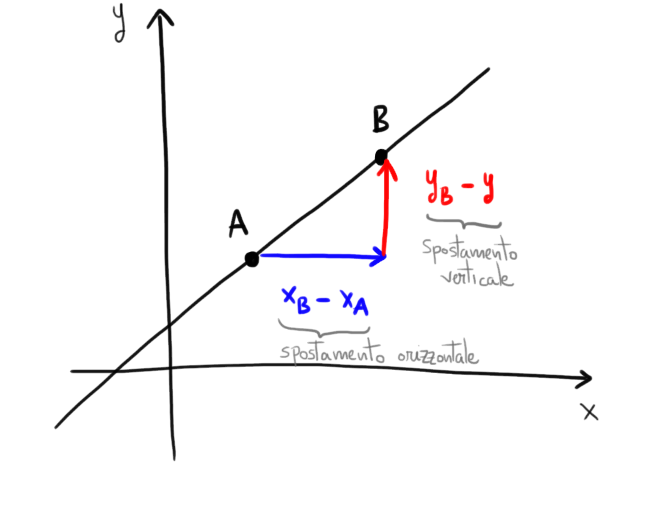

Coefficiente angolare di una retta passante per due punti assegnati
Dati i punti
\[
A(x_{_A}\,;\,\,y_{_A}) \quad B(x_{_B}\,;\,\,y_{_B})
\]
il coefficiente angolare della retta passante per \(A\) e \(B\) è
\[
m = \dfrac{y_{_B} - y_{_A}}{x_{_B} - x_{_A}}
\]

Esercizio 0
Ripassare il paragrafo Equazione della retta in forma implicita a pag. 137 e 138 del libro
di testo. Concentratevi in particolare sulle rette parallele all'asse \(y\).
Esercizio 1
Si consideri l'insieme di rette descritto dall'equazione
\[
\dfrac{k^3 + 1}{k}x + \dfrac{k^2 - 5k + 6}{k + 5} y - 2 = 0
\]
Determinare per quali valori di \(k\) si ottiene una retta verticale.
Soluzione:
\(k = 2\,\,\,\) oppure \(\,\,\,k = 3\)
Svolgimento
Esercizio 2
Si considerino i punti
\[
A(k\,;\,\,2k -1) \qquad B(k - 1\,;\,\,k - 4)
\]
Stabilire per quali valori del parametro \(k\) la retta passante per \(A\) e \(B\) è crescente.
Svolgimento:
Si ottengono rette crescenti se \(k \gt -3\).
Svolgimento
Esercizio 3
Assegnato i punti
\[
C(1\,;\,\,2) \qquad P(x\,;\,\,y)
\]
Individuare la distanza tra i \(C\) e \(P\).
Osservazione
Siccome il punto \(P\) dipende dal valore che assegnamo ad \(x\) ed \(y\), la distanza
\(\hat{CP}\) dipenderà a sua volta da \(x\) ed \(y\).
Che figura otteniamo considerando l'insieme di punti \(P\) tali che abbiano distanza da \(C\) pari a \(2\) unità?